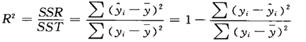

相关与回归的联系：
- 相关分析一般作为回归分析的基础，就是在进行回归分析之前，要先观察变量之间的关系，如果是线性关系，才能进一步做回归分析，如果不是线性关系，需要进行一定的数学变换；
- 回归分析侧重于变量之间的数量关系，需要通过一定的数学表达式将这种关系描述出来，进而确定一个或者几个变量（自变量）的变化对另外一个特定变量（因变量）的影响程度。
一元线性回归分析
一元线性回归模型可以表示为：
𝜷𝟎 表示的是截距，𝜷𝟏 表示斜率，𝜺 表示随机误差，也是后面提到的残差项。包括线性部分和随机误差两个部分。
回归方程的计算
最小二乘法（method of least squares）：是使因变量观测值与实际值之间距离的平方和最小的那条直线的方程。
回归方程的拟合优度
平方和的分解（变异的分解）：
判定系数计算公式：

由上述公式可知，当回归平方和占比越大（回归引起的变异越大）判定系数就会越大。表示回归方程的拟合效果越好。判定系数度量了回归直线的拟合效果。
与相关系数的关系：
- 在一元回归分析中，相关系数的平方就是判定系数；
- 多元回归分析中，预测值与实际值相关系数的平方就是判定系数；
回归方程的显著性检验
一元线性回归有三个假设检验：
- 线性关系的的检验：检验是否存在线性关系（与散点图判断形成互补）
- 斜率的检验：检验自变量对因变量的影响是否显著
- 常数的检验：检验回归方程的常数是否为 0
原假设分别是：
- 线性关系检验：两个变量之间的线性关系不显著；
- 斜率的检验：斜率等于 0；
- 常数的检验：参数等于 0；
以上检验均在 sig < 0.05 时，拒绝原假设。
模型的使用前提
- 因变量与自变量之间具有线性关系
可通过散点图来验证，如果非线性关系，可将其转换为线性。 - 在重复抽样中，自变量 𝑥 是固定的，即假定 𝑥 是非随机的；
基于这两个假定，对于给定的 𝒙 的取值，𝒚 对应着一个分布，重复抽样时相当于从这个分布中抽出不同的 𝒚 值 。 - 误差项是一个期望为 0 的随机变量；
- 对于所有的 𝑥 的取值，误差𝜀的分布相同，满足相同的均值为零的正态分布；
- 基于上述假定，要求进行回归分析时：
必须确定变量之间满足线性关系（通过散点图观察，不是线性关系关系要转换）
回归分析后要进行残差分析（检查残差是否正态分布，是否随自变量变化而变化）
SPSS 操作
第一步：散点图
第二步：如果我们认为散点图并不是呈线性分布，可以进行曲线估计：
分析 － 回归 － 曲线估算
将所有模型勾选，再从多个模型中选择。
模型效果主要依赖于 R 方的值，若 R 方的值越大，则代表模型的数据拟合效果越好。
从上面的结果来看，对数、二次、三次和 S 模型的 R 方值较大，因此我们单独对这四种模型进行实验。
从图表中我们发现，S 模型的模拟效果最好，然后我们可以查 S 模型的函数表达式，将其转换为线性模型。
第四步：相关系数计算及相关性检验
分析 － 相关 － 双变量相关性
相关性系数为 0.916，可知相关性很高。因此可进一步做回归分析。
第五步：计算回归方程并检验
分析 － 回归 － 线性
R 方的值为 0.839，说明回归系数可以很大程度上解释模型。方差分析和系数的 P 值均为 0.000 < 0.05，因此说明该模型是个较好的模型。
第六步：残差期望为 0 的检验
分析 － 回归 － 线性
保存：勾选预测值 － 未标准化（得到预测销售额）
转换 － 计算变量
残差 = 预测值 - 真实值
分析 － 描述统计 － P-P 图/Q-Q 图
由于点是沿直线分布的，我们可以认为是正态分布的。若点全部在直线上，则说明点是标准正态分布的。
查看直方图：
数据虽然有偏态，但是基本符合正态分布。
说明我们建立模型基本符合要求。
利用回归分析进行预测和控制
预测与控制：
- 预测（predict）：通过自变量 𝒙 的取值来预测因变量 𝒚 的取值
- 控制（control）：通过确定因变量 y 的取值来控制自变量 𝒙 的取值
预测值的估计方法：
- 点估计：直接利用回归方程计算出相应的因变量的取值
- 区间估计：点估计的值加上预测误差
注：注意进行预测或者控制时。使用的自变量或者因变量的值最好都不要超过原来样本数据的范围，超出的效果可能不会很好。
回归分析结果评价，从以下几个角度考察模型的好坏：
- 回归系数是否理论或者事先预期一致；
- 统计检验的显著性；
- 判定系数；
- 残差项是否符合正态分布
SPSS 操作
分析 － 回归 － 线性
保存：勾选预测值 － 未标准化（得到预测销售额）
多元线性回归分析
自变量有多个，因变量只有一个的回归分析称为多元回归分析（multiple regression model）。
多元回归方程的计算方法仍然是最小二乘法。这些过程均由软件计算。在多元回归分析中需要注意的是，对于每个变量前的系数都要进行检验。
多元回归分析的拟合优度：其实质是通过拟合出的回归方程计算出的预测值与实际值之间的拟合优度。
往回归模型中增加变量，即使这个变量不是统计显著的，也会增加判定系数，因此要慎用判定系数。消除增加变量影响的判定系数是调整的多重判定系数。
多元线性回归分析
多重共线性：回归模型中，两个或者两个以上的自变量彼此相关时，称回归模型中存在多重共线性。
多重共线性导致的问题：
- 线性关系显著，大部分回归系数却不显著；
- 回归系数的符号与理论或者预期不符合；
多重共线性的识别：
- 各自变量之间显著相关（使用散点图矩阵和相关系数矩阵）
- 线性关系检验显著（F 检验显著），各自变量系数却大多数不显著
- 回归系数正负号与预期相反
- 容忍度（tolerance）小于 0.1 或者方差扩大因子（VIF）大于 10，认为存在严重共线性
多重共线性问题的处理
- 删除相关性很强的两个自变量中的一个，或者删除多个相关性很强的自变量中的几个变量
- 提取主成分，将多个相关性很强的变量包含的信息浓缩到一个变量中
- 如果不删除变量：那就不用来建立解释现实事物间关系的模型，因此不用进行系数的检验；可利用回归方程在自变量样本值范围内预测因变量
多元线性回归的 SPSS 分析
第一步：自变量与因变量之间的散点图矩阵
总收入与点击率关系不大。此外，我们发现两个自变量：点击量和曝光量之间有很强的正相关，是否需要删除点击量或曝光量，需要进一步探讨。
第二步：观察因变量与自变量之间的相关性
第三步：观察自变量之间的相关性（共线性问题）
总收入与曝光量、点击量有很强的正相关关系，点击率的相关性系数很小，且没有统计学意义。
第四步：输出相关系数矩阵和统计检验的相伴概率
由于通过上面的分析，点击率与总收入的相关性很弱，因此我们不将其纳入模型。
从上面的结果我们发现，R 方为 0.876，因此模型的可解释性较强。模型的总体具有显著性。
而自变量中的曝光量不具有统计学意义，点击量的显著性较强。因此我们考虑可能存在多重共线性。
分析 － 回归 － 线性
选择“统计”， 勾选 “共线性诊断”
我们发现共线性因子均为 2.085，不存在明显的共线性问题，没必要删除其中的变量，但由于“曝光量”自变量不显著，因此考虑删除该变量。
重新实现回归模型。
第五步：将自变量逐步纳入模型
第六步：根据假设检验结果，专业解释，共线性识别决定保留那些变量

可以得到如下的回归模型： 总收入 = 0.475 * 点击量